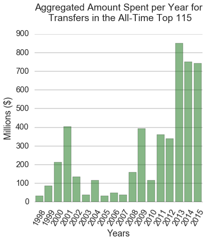
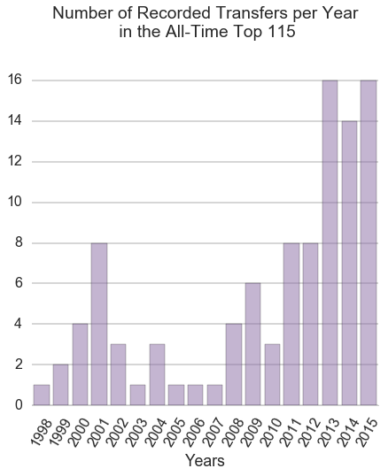

Repository for CS109 Final Project
This project is maintained by Taylor Killian, Abhishek Malali and Virgile Audi
The primary motive of the project outlined below was designed to answer the following question: Can we evaulate and infer a player's value to his team based solely on the impact that they have on matches? In this respect, and to simplify our analysis, we define "impact" to mean the goals and assists provided for their team during various game states.
When football clubs do not perform equal to their, and their fans', expectations they look to infuse their team with more talented players, typically drawn from lower-tier or financially poor teams. The financial incentive for both teams in any transaction is clear, the buying team has hope that the new addition will put them over the top talent-wise to improve their standing in league competition while the selling team may look at the new funds as a way to prepare for the future and secure several new players to improve their team long-term.
Within the last 5 years, the economy of player transfers has undergone significant inflation where the top-tier clubs have shown a willingness to overpay for marginal talent or for players that may not be a good fit in their team. There is some notion that the transfer system is broken and is in need of revitalization. There are multiple ways to address the psychology of club executives and try to identify their motivations for spending money to procure new talent for their team. We refrain from any investigation into club finances but want to determine a method by which we can accurately and objectively place value on any player based on the impact that they have on the matches they play in.
Our primary motivation is to quantify the impact (based on goals scored, assists made and consistency of play) an individual player has on the games which he plays for his team. We intend to use this quantity for each player to infer their value (agnostic of team at first and later based on current team and potential buyers). We hope to learn more about what goes into modeling player value, beyond subjective measures of team they currently play for and the league they currently play in, and how we can compare like players with each other.
The player transfer market has seen ever increasing transfer amounts over the years. Ever increasing broadcasting deals have made the leagues richer which has reflected in the spending.
We looked at the top 100 transfers in the last 20 years. The last five years alone account for 65 transfers in the top 100 list with the transfer record being shattered twice. This trend motivated us to investigate if the market was inflated and whether or not the players justified their value for the respective transfer amount.
The data we use for our analysis is scraped is from World Football. World Football has match by match data in terms of the players who participated in the games as well as the goal scorers. The site had data for all the five leagues which we were interested in. The url links were not hard to deal with provided we had a list of teams which participated in a league for that year. We scraped the goalscorers, players who assisted the goalscorer along with the time at which the goal was scorer. We also recorded the time at which the goal was scored and whether the goal scorer and assist maker were substituted. We scraped the data for the seasons of 2012-13 and 2013-14 and faced minor hiccups with the Italian team of Atalanta for which we had manually enter the data.
Overall we scrape 760 pages for every league which in total was about 3800 webpages.
The transfer values were scraped from the Wikipedia link for transfers for every league for a season. The French and the German league did not have transfer values mentioned for the season's under consideration. The Spanish league did not have transfer data available for the summer of 2014. An example of the data which we had to scrape can be looked here at Wikipedia.
We wanted to visualize where the big money transfers were happening. The plot below was built in D3 for specifically that purpose. It was see the emphasis of the price of the player on different emtrics like goals, assists and the metric score generated by us. This could also help find groupings of players who were available in the similar price range while providing the same attacking punch in terms of goals.
Relevant details about the metric.
Using traditional statistics, we look at the best players in terms of goals and assists. The first plot show the best players for the season of 2012-13. The top players were names you would have heard of even if you aren't as ardent a soccer fan as our team.

We evaluate the top players for the season of 2012-13 using the metric which we have defined.

Our list of top 20 players is very similar to the list we generated using traditional statistics. But in effect there are a few names we might come across as anomalies like Stephan Kiessling. This just goes to show that our metric gives credit to players who are valuable in contributions but are forgotten when we look at their absolute statistics. Comparing our proposed metric with the traditional statistics.
In the plot above we chart the ranking according to our metric compared to the ranking if we went along traditionally. The 45 degree line is plotted for reference. We see that certain players who were ranked highly as per the goals + assist metric did fall down the ranking ladder when the metric changed. The metric does not affect the top players since we see a close grouping near the origin. But as we go down the ranking ladder we see significant jumps. We find lots of players who weren't ranked well now within the top 50. This directly states that we are doing a decent job of finding underrated players who contribute immensely but are not noticed.
For the two most recognisable players, Lionel Messi and Cristiano Ronaldo we see how their scores evolve over the season in the plot below. A consistent performance in most games is the desirable trend we want to see with the succesfull forwards.

As you can see from the time series above Messi dominated Cristiano Ronaldo in almost every game for the 2012-13 season. The contribution was rewarded with the FIFA World Player of the Year award for Messi for 2012 season.
We were keen on analyzing these time series for some interesting players for a season. But complexity of analyzing every set of players visually and making key discoveries was cumbersome.
To check consistency of our metric against what really transpired in the season, we add up all the scores for the players in a team and rank them. We then compare this ranking to the actual ranking of the team achieved in the season. As the plot shows below, the rankings predicted by our measure were close to actual results and showed a correlation of 0.73. This is due to us giving consideration to the attacking statistics and lack of freely available defensive statistics data.
For the spanish league for the season 2012-13 we did find or rankings to be much closer to the final rankings. In this case the correlation was 0.92.
As football enthusiasts a key question which we wanted to address to find the players which are very similar. This would be meaningless if it was done just using the data like goals and assists, since those numbers can mislead us on the contribution. Hence we used the entirety of the data including the unwrapped contribution time series. This would cluster players who contribute similarly in the games as well over the seasons.
We found clusters of similar minded players for both seasons. An interesting way of looking at performance would be find players who move between clusters over seasons. This can indicate an improvement or decrement in performance over seasons.
An interesting note to make here would be that Messi was classified with Robin van persie who had way lesser goals and assists. He was equally monumental in helping his team to the Premier league title. These were the kind of clusters and observations we were hoping we would get to see when we processed and clustered our data.
We train a few classifiers to identify whether or not we can predict calculated value from one season to the next. Initially, we will train a random forest classifier on a 70/30 train/test split from the 2012-2013 season.
Using the data, we run a Random forest regressor to figure out the most domninating features in the data.

Here we see that the importance of the 'avg_value' and 'avg_value_smoothed' features far outweigh the others. After seeing this, we'll remove the two of them and only use the incremented totals for goals and assists.

After training and predicting, we see a tight grouping around the 45 degree line.

After training and predicting on the 2013-14 dataset.

We use a linear regressor to predict and we find a very high accuracy for both the seasons.

Add extra comments.

Fill in relevant details